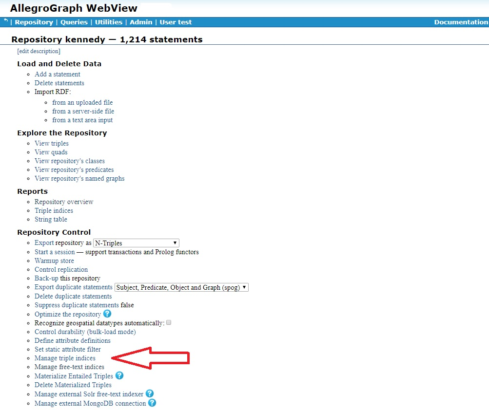
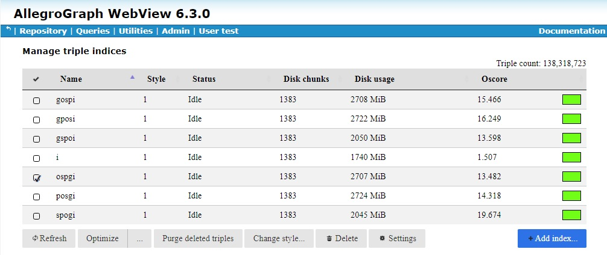

Introduction
When triples are deleted they are not immediately removed from indices because they must remain in all indices until all transactions which may potentially need to see those triples (such as transactions that started before the triples were deleted) have completed (been committed or rolled back). A triple that cannot possibly be accessed by any live transaction is referred to as an inaccessible triple.
The existence of inaccessible triples in indices wastes space and impacts query performance. Therefore AllegroGraph provides a facility to purge these triples from indices.
AllegroGraph indices are composed of chunks, each of which contains some number of triples. The purge operation scans all chunks of an index and rewrites those chunks which have inaccessible triples. The rewritten chunks exclude the inaccessible triples. The datafile space associated with the old chunks becomes reusable after the next checkpoint completes. By default, maximum time between checkpoints is controlled by the CheckpointInterval catalog directive.
Rate limiting
For large triple stores the purge operation can put a heavy load on the system, particularly if it has to read index chunks from disk. Heavy disk read activity can negatively impact running queries. To address this the purge operation supports rate limiting in terms of read IOs per second. The rate limit can be adjusted at any time during the operation. The rate limit must be 0 (meaning no limit) or a positive integer between 1 and 4,294,967,295, inclusive. The rate limit is reset to 0 (no limit) each time a database instance is started.
Interaction with index optimization
When an AllegroGraph database instance is started, multiple (4 by default) index optimizer processes are started. Index optimizers perform index maintenance operations which are triggered automatically or by explicit DBA request. Deleted triple purge is one of these operations. Standard index optimization operations have higher priority than deleted triple operations. A given index optimizer will operate on one index at a time.
Permission to purge deleted triples
Any Direct Lisp Client user can initiate the purging of deleted triples (only the user who started the server can run the Direct Lisp Client).
Remote Lisp Client users can only initiate the purging of deleted triples if they have superuser permission. See the General permissions section of the Managing Users document for information on user permissions including superuser permission.
AGWebView interface
In the Repository Control section of the [Repository overview page](agwebview.html#RepositoryOvervewPage], there is a link to Manage triple indices.

Clicking on that link displays the Manage triple indices page:

If the current user has superuser privileges, the Purge deleted triples button will be active and clicking it purges the deleted triples for the selected indices (more than one index can be selected at a time). The purge rate is set by the Settings button on the same page. The rate limit displayed by Settings is the current rate limit and can be changed at any time. Changes to the value take effect immediately (if the value is valid).
HTTP interface
The following are all repository URLs, meaning that [repo] must be replaced by /repositories/[name] or a dedicated backend URL prefix:
POST [repo]/jobs/purge-deleted-triples
Start a purge operation
Optional parameters:
index (multiple allowed): names an index flavor to operate on. If not specified, operates on all indices.
DELETE [repo]/jobs/purge-deleted-triples
Cancels a purge operation
Optional parameters:
index (multiple allowed): names an index flavor to cancel purge on. If not specified, cancels for all indices
GET [repo]/settings/purge-rate-limit
Returns the deleted triple purge operation rate limit (average read IOs per second).
0 means no limit
POST [repo]/settings/purge-rate-limit
Required parameter: rate=N
Sets the purge rate average read IO limit to N. 0 means no limit. The maximum limit is 4,294,967,295. (The limit is reset to 0 each time a database instance is started.)
Requires superuser privileges. Lisp interface
See Purging Deleted Triples in the Lisp Reference manual. The three relevant functions are: